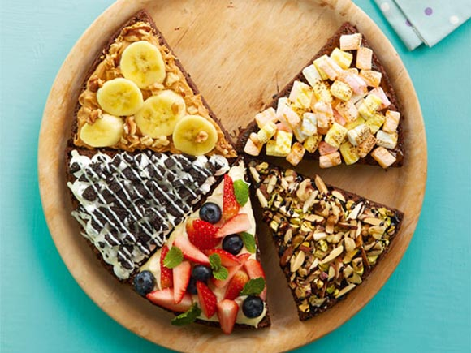

วิธีทำบราวนี่พิซซ่า แปลงเมนูขนมสุดคลาสสิกอย่างบราวนี่ให้เลียนแบบอาหารฝรั่งอย่างพิซซ่าจนน่าทึ่ง หลากหน้าหลายตา ไอเดียล้ำได้อีก !เชื่อว่า ขนมบราวนี่เค้ก หรือเค้กบราวนี่เป็นของโปรดของใครหลายคน ไม่ว่าจะเป็นบราวนี่หน้ากรอบ บราวนี่หน้านิ่ม หรือบราวนี่ชีสเค้ก แต่ถ้าใครเบื่อกับรูปร่างหน้าตาของบราวนี่ผงโกโก้ชิ้นสี่เหลี่ยม ๆ แล้วลองมาทำบราวนี่ไอเดียสุดแนวกันดีกว่าค่ะ ใครมีส่วนผสมพร้อมยกมือ มาเข้าครัวพร้อมกันเลยจ้า
ส่วนผสม บราวนี่พิซซ่า
• แป้งสาลีอเนกประสงค์ 100 กรัม
• ผงโกโก้ 20 กรัม
• ผงอัลมอนด์ 50 กรัม
• เนยสดชนิดเค็ม 150 กรัม
• ดาร์กช็อกโกแลต (หั่นชิ้นเล็ก) 150 กรัม
• ไข่ไก่ 3 ฟอง
• น้ำตาลทราย 250 กรัม
• กลิ่นวานิลลา 2 ช้อนชา
• พิมพ์เค้กกลม ขนาดเส้นผ่าศูนย์กลาง 10x10 นิ้ว
วิธีทำบราวนี่พิซซ่า
1. ร่อนแป้งสาลีอเนกประสงค์กับผงโกโก้ลงในอ่างผสม เติมผงอัลมอนด์ลงไปคนพอเข้ากัน พักไว้
2. ใส่เนยสดกับดาร์กช็อกโกแลตลงในอ่างผสม นำขึ้นตุ๋นบนน้ำร้อนคนจนละลายเข้ากันดี ยกลง พักไว้ให้คลายความร้อน
3. ตีไข่ไก่กับน้ำตาลทรายด้วยตะกร้อมือ พอขึ้นฟูเล็กน้อยใส่กลิ่นวานิลลาและส่วนผสมช็อกโกแลตตุ๋นลงไปคนพอเข้ากันดี เทใส่ส่วนผสมแป้งที่ร่อนไว้ คนจนส่วนผสมเข้ากันดี
4. เทส่วนผสมบราวนี่ลงในพิมพ์เค้กกลมที่ทาเนยขาวและปูกระดาษไขไว้แล้ว ความหนาประมาณ 2 เซนติเมตร
5. นำเข้าเตาอบที่อุณหภูมิ 360 องศาฟาเรนไฮต์ ประมาณ 30-40 นาที หรือจนสุก นำออกจากเตาอบ แซะออกจากพิมพ์ พักไว้บนตะแกรงจนเย็นสนิท
6. หั่นบราวนี่ให้ได้ 6 ชิ้น ตกแต่งหน้าให้สวยงาม

ส่วนผสมสำหรับแต่งหน้าบราวนี่
• ครีมเปปเปอร์มินต์
• ช็อกโกแลตไซรัป
• ครีมชีส
• คาราเมลไซรัป
• วิปปิ้งครีมชนิดหวาน
• พีนัทบัตเตอร์ (เนยถั่ว)
• มิกซ์นัท (ถั่วอบต่าง ๆ)
• มาร์ชเมลโล่
• คุกกี้ช็อกโกแลต
• ไวท์ช็อกโกแลตละลาย
• เม็ดช็อกโกแลตนมเคลือบสีต่าง ๆ
• เวเฟอร์เคลือบช็อกโกแลต
• สตรอว์เบอร์รี
• บลูเบอร์รี
• กล้วยหอมสุก
• วอลนัทอบสุก
• ใบสะระแหน่
ส่วนผสม ครีมเปปเปอร์มินต์
• เนยสดชนิดเค็ม (พักไว้ให้นุ่ม) 100 กรัม
• น้ำตาลไอซิ่ง (ร่อนแล้ว) 70 กรัม
• กลิ่นเปปเปอร์มินต์ 1 ช้อนชา
• สีผสมอาหารสีเขียวแอปเปิล (เล็กน้อย)
วิธีทำครีมเปปเปอร์มินต์
1. ตีเนยสดกับน้ำตาลไอซิ่งด้วยตะกร้อมือจนขึ้นฟูเป็นครีม
2. ใส่กลิ่นเปปเปอร์มินต์กับสีผสมอาหารลงไปคนผสมจนเข้ากันจึงนำไปใช้
ส่วนผสม ครีมชีส
• ครีมชีส (พักไว้ให้คลายเย็น) 150 กรัม
• น้ำตาลไอซิ่ง 3 ช้อนโต๊ะ
• น้ำเลมอน 1 ช้อนโต๊ะ
• วิปครีมชนิดจืด 1 ช้อนโต๊ะ
วิธีทำครีมชีส
1. คนครีมชีสกับน้ำตาลไอซิ่งด้วยตะกร้อมือจนเป็นเนื้อเดียวกัน
2. ใส่น้ำเลมอนกับวิปครีมลงไปคนจนส่วนผสมเข้ากันดีจึงนำไปใช้
แหม… ทำไมไม่เจอสูตรบราวนี่พิซซ่าให้เร็วกว่านี้ เราจะได้ทำเป็นของขวัญวันเกิดให้คุณแฟน เอ๊ะ ! เดี๋ยวก่อนนี่ก็ใกล้วันเกิดคุณลูกเหมือนกันนี่นา จัดเลยสักถาดดีกว่า ว่าแต่เอาหน้าอะไรดีนะ
ขอขอบคุณข้อมูลและภาพประกอบจาก
https://cooking.kapook.com/view141992.html
Copyright © EAT&EAT nc. สงวนลิขสิทธิ์